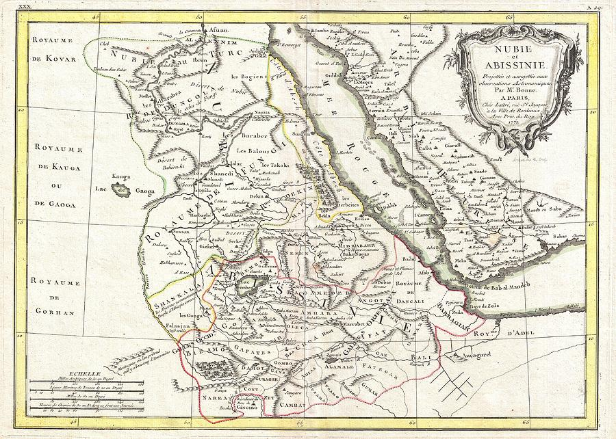
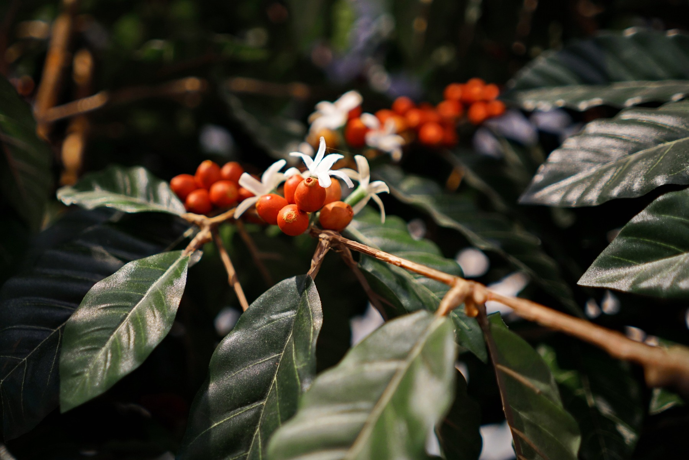

Definition of Coffee
Coffee is a beverage prepared primarily by using the roasted beans of the Coffea plant. Coffee is usually darkly colored, bitter, and slightly acidic. While coffee is consumed primarily for its caffeine content, there are many different ways to prepare coffee. Different methods of brewing can result in coffee that has a variety of bitterness and acidity levels, while different things can be added to coffee to alter its taste or appearance.
Brief History of Coffee
Coffee has a very rich history, and is present in almost every single culture in the world. Every region prepares coffee differently, you can even find out details about a culture's history just by looking at how they prepare their coffee. Though now a global comodity, it has a long history tied closely to food traditions around the Red Sea. The earliest credible evidence of coffee drinking as the modern beverage appears in modern-day Yemen in southern Arabia in the middle of the 15th century in Sufi shrines, where coffee seeds were first roasted and brewed in a manner similar to how it is now prepared for drinking. Coffee was used by Sufi circles to stay awake for their religious rituals. Accounts differ on the origin of the coffee plant before its appearance in Yemen. From Ethiopia, coffee could have been introduced to Yemen via trade across the Red Sea.
Coffee Etymology
The word coffee entered the English language in 1582 via the Dutch koffie, borrowed from the Ottoman Turkish kahve, borrowed in turn from the Arabic qahwah. The word qahwah most likely meant "the dark one", referring to the brew or the bean; "qahwah" is not the name of the bean, which are known in Arabic as bunn.
From Soil to Cup
Plant Growth (1.5 months)
To produce coffee beans, we must first grow and cultivate coffee plants. The seeds of the coffee plant are planted into organic terrain, then after approximately one and a half months, the seed will sprout and be transplanted into the seedbeds. After other 4 to 6 months, if the plant is growing and healthy, it will then be transplanted into the field.
Flowering and Coffee Cherries (16 to 20 months)
The flowering, one of the most beautiful steps in the lifetime of the coffee plant, marks the beginning of the cherry growth. It takes approximately 3 to 4 months after the flowering for the green cherries to grow and another 4 months approximately, for them to be ripe and ready to harvest.
Harvest
The harvesting of coffee can take up to several weeks depending on the size of the plantation area. Also, when coffee is hand-picked, some cherries will be picked in the first phase of harvesting and for the others we might have to wait until the full ripeness, in the second or sometimes even third harvest.
Processing
Once the cherry is picked, it is taken to be processed in a mill where they are selected, sorted, peeled, washed and dried. There are three processing techniques used by coffee farmers: wet-processing, dry-processing and semi-dry processing. The processing of the coffee cherry is just as important as the picking and maybe more tedious

In the wet-process (washed coffee), the skin and pulp are removed before the fruit is dried. This process requires specific machinery and a substantial amount of water. The coffee cherries are immersed in water. Bad or unripe fruit will float and the good, ripe fruit will sink. The bad fruit is discarded while the remaining pulp is removed from the coffee bean through microbes in fermentation or scrubbed off with special equipment. The coffee beans are then dried by the sun on tables or on patios. The beans are carefully circulated and raked to avoid mildewing or any tainting of the beans' flavors. Before being bagged for shipment, the outermost parchment skin of the bean that remains is hulled.
In the dry process (also known as unwashed or natural coffee), the entire cherry is first cleaned and then placed in the sun to dry on tables or in thin layers on patios. As described with the wet-process, the beans are circulated and carefully raked to avoid mildew and to ensure that the beans dry evenly. The beans are watched closely because overdrying can cause the beans to become dry and brittle, making them break easily in the final hulling operation. Underdrying can be detrimental too, beans that are insufficiently dried and bagged are prone to fungal or bacterial attack.
In the semi-dry process, a hybrid process of the two methods previously explained, the outer skin of the coffee cherries are removed mechanically. The coffee beans, still coated with pulp, are stored for up to a day. Then the pulp is washed off, leaving the thin parchment skin on the bean and the parchment coffee is partially dried in the sun. This process is also called wet-hulled or semi-washed process.
The roasting company usually stores the beans for no longer than a few months. Many differnt methods and intensities of roasting can be applied here to change and enhance the bean's flavor profile to consumer's liking. The roasted beans are then left to degas from 2 to 3 days in order to let the CO2 evaporate.
The roasted beans are then packaged and sent to coffee shops or consumers to be ground into coffee grounds for extraction. The beans are also sent to factories that manufacture instant coffee.